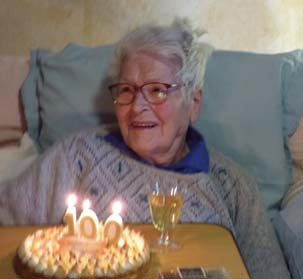

25 Ce début d’année 2026, le CADIL a comme chaque année fêté les rois autour de galettes et de coques au mois de janvier L’assemblée générale s’est tenue le 8 février et une dégustation de crêpes a permis de continuer de façon conviviale l’après midi Le 2 avril, dans notre hameau de La Madeleine, nous avons eu la joie de célébrer le centième an- niversaire de De- nise MALMON. La petite fête qui était prévue pour réunir tout le monde autour de notre cente- naire, n’a mal- heureusement pas pu avoir lieu, notre amie De- nise ayant eu quelques soucis de santé à ce mo- ment là. Mais nous avons prévu, de remettre cette célébra- tion à un moment plus favorable pour elle. Malgré tout, Monsieur le Maire et deux personnes du CADIL sont venues lui rendre visite et lui appor- ter un petit présent pour cette occasion. Mi avril, notre weekend dans les Alpilles qui n’avait pas pu avoir lieu en 2025 s’est déroulé sous le signe de la découverte et de la bonne humeur pour la joie de tous les participants ravis de ce beau voyage. Nous avons projeté encore bien des rencontres pour continuer cette année 2026�: Notre repas d’été en juin prochain, un concert de musique et chant dans notre petite église de La Madeleine en septembre. Un concert des chœurs et orchestre de l‘Aveyron également dans l’église de La Madeleine en oc- tobre et deux sorties de la journée, une en mai au gouffre de Padirac et l’autre au village d’Auvillar et à l’église de la Chapelle en automne Vera VANDYCK Présidente du CADIL CADIL Rien de plus grati�ant pour la chorale Chœur à Cœur que de terminer l’année par la fête de la mu- sique et la célébrer avec les résidents de la Maison de Retraite de Montpezat ! Elle vous donne rendez-vous, le samedi 5 décem- bre à 15h à la Collégiale, avec l’Ensemble Polyfonia, pour chanter Noël, concert donné au pro�t du Té- léthon. Très bel été à tous Chorale Chœur à Cœur Voici l’été et ses festivités que du bon pour le moral, après la morosité de l’hiver et l’actualité du mo- ment… A l’occasion de la fête locale au hameau, le Di- manche 26 Juillet, pour fêter Marie-Madeleine, sera célébré, au sein de notre église à 11 h 00 un of�ce, suivi du dépôt de gerbe au monu- ment aux morts et complété par un apéritif festif en musique, ouvert à tous. Nous vous attendons nombreux – A très bientôt – Pour le Comité, Le Président, Guy CAMMAS Comité des Fe�tes de La Madeleine Comité pour l’Animation le développement et l’information locale du Bas Quercy Siège : LA MADELEINE 82270 MONTPEZAT DE QUERCY Tél : 00324 98 68 13 53 / 06 80 85 17 67 / 06 17 40 22 39 07 81 78 97 48 veravandyck@gmail.com carreye.carole@orange.fr - allbernard@wanadoo.fr. - maryseisaac@free.fr